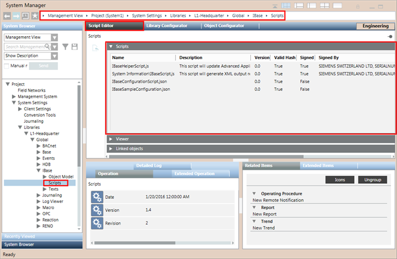
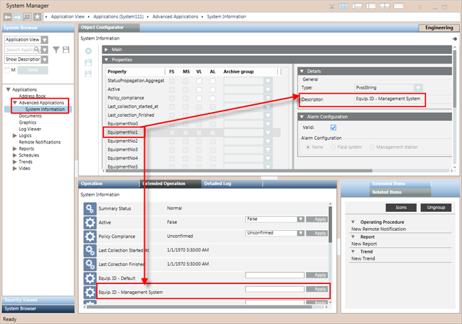

(Optional) Verify the IBase Scripts Library
Do this procedure if you want to check the scripts installed together with the IBase extension.
- In System Browser, select Management View.
- Select Project > System Settings > Libraries > L1-Headquarter > Global > IBase > Scripts.
- The Script Editor for the IBase script library displays.
- To view the list of the IBase scripts included in the Scripts library, open the Scripts expander.
- Each IBase script in the list is identified by a name, a description, the version, an indication about whether or not (True/False) a script is signed (certified), and the name of who signed the script.

You need to check the following IBase scripts located on system at
[Installation Drive]:\[Installation Folder]\[Project Name]\libraries\Global_IBase_HQ_1\Scripts:
- IBaseConfigurationScript.json
Contains Object models and properties related to Management Station Objects. This file is provided by IBase extension module. - IBaseHelperScript.js
Sets the Properties in the Object Configurator that display when you select Applications > Advanced Application > System Information. - IBaseSampleConfiguration.json
A sample configuration file, serving as template, which can be used by other sub-systems to create their own IBaseConfigurationScript.js file. You must rename this file as IBaseConfigurationScript.js and save a local copy for modification. - System Information\IBaseScript.js
The main IBase Script, which is displayed in the Script Editor under Applications > Logics > Scripts > IBase Script. When executed, it generates the IBase report gathering information for the current project including all the data managed by the extension modules.


NOTE:
If any of the required IBase scripts are missing or if the version is not the one you expect according to the latest technical information, contact the System Librarian.